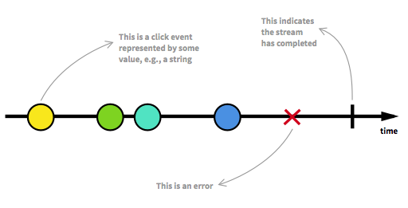

Better event handling with RxJS
Observables
Agenda
Introduction
Callback vs. Promises vs. Observables
RxJS Examples
Discussion
Why RxJS?
Callbacks
- Event driven
- Callback hell
- Tight coupling between source and listener
- No synchronization
Promise
- Event driven
- No callback hell
- Limited synchronization (Promise.all())
- Tight coupling between source and listener
asynchronous data streams
actions on the streams

Observables
Thank you for your attention!
Interested in examples?
Example 1: Keyboard Events

log 'u' to console, throttled (max. 2 per seconds)